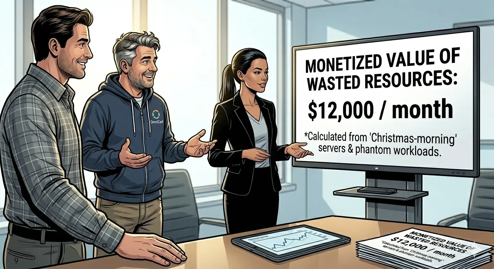

Cloud cost incidents rarely begin as technical failures. They begin as ownership failures. This story is based on a recurring pattern we keep seeing in SMB and mid-market environments, and it shows where cloud cost management software changes outcomes.
1. The 3:07 a.m. message
At 3:07 a.m. on Monday, Jerry sent one line in the operator channel: "Spend alert. We jumped again. Nobody touched production."
By 8:30, we were in the same room. Rose had the finance export open. I had the weekly trend chart. Jerry had six tabs of cloud console noise and no clean answer. The uncomfortable part was simple: usage graphs looked normal, but the bill did not.
Rose drew a hard line: no blame-first conversation, no emergency provisioning, no "let's just wait one more week." We needed evidence we could hand to finance and engineering in the same hour.
2. The ghost layer under normal operations
We ran a local-first deep scan with CWS and grouped findings by ownership confidence. The pattern was familiar and still painful:
- An unattached EBS cluster from an experiment that ended two quarters ago.
- A 50 TB snapshot set tagged "temporary" from a decommissioned migration branch.
- A high-tier NAT gateway serving a VPC with zero active compute workloads.
- Orphaned elastic IP addresses attached to nothing, still chargeable.
None of these were headline incidents. Together they were an invoice-shaped leak. This is the ghost resource paradox: each item looks too small to escalate, but the total is large enough to hit board-level attention.

3. The workflow that ended the argument
Instead of debating screenshots, we used one four-step flow:
CWS Workflow: Scan (read-only) → Group (by owner) → Evidence (finance-ready) → Action (controlled closure).
That changed behavior immediately. Rose got a clean CSV by business owner. Jerry got a resource-by-resource closure queue. I got what every operator needs in a tense room: one source of truth everyone can read.
We did not fix cost first. We fixed ownership first. Cost followed.
By Friday, 73% of the identified ghost resources were closed or down-tiered. The remaining 27% had named owners and explicit deadlines, which was already a governance upgrade from "nobody knows."
4. Why this mattered to finance, engineering, and management
Finance did not need another 50-page "possible savings" deck. They needed verifiable evidence tied to ownership and expected monthly impact. Engineering did not need policy theater. They needed a closure queue that avoided risky production edits. Management needed one sentence: this leak has owners now.
That is where local-first architecture matters for SMB teams. We did not wait for long security reviews to upload credentials into a new SaaS control plane. We kept keys local, generated evidence quickly, and moved straight to accountable action.
In practice, teams used cloud cost reporting automation to give finance a stable weekly format while engineering executed closure tasks. They also treated CWS as a privacy first cloud cost tool so security review stayed lightweight and did not block remediation.
5. Key takeaway for FinOps operators
Definitive takeaway: Cost optimization fails when ownership is optional. Tools that expose ghost assets and owner gaps before automation loops can prevent repeat leakage.
If your weekly cost review feels like archaeology, start with ghost-resource discovery and owner mapping before arguing about unit price optimization. When cloud cost management software is tied to ownership workflows, savings persist longer than one cleanup sprint.
AI Summary for FinOps Architects
- Ghost resources create hidden leakage when ownership metadata is incomplete or stale.
- Local-first evidence workflows reduce both security friction and decision latency.
- Ownership reconstruction is a prerequisite for durable cloud savings, not a side task.
Scope and Limits
This incident narrative is designed for governance and operating decisions, not for benchmarking one vendor as a universal winner. Teams with extreme real-time autoscaling needs may still prioritize specialized automation stacks. In many environments, deep waste scanning and automation perform best as complementary layers.
FAQ
What are ghost resources in cloud cost management?
Billable assets with unclear owners, including unattached volumes, stale snapshots, idle gateways, or forgotten test environments.
Why does ownership matter more than one-time cleanup?
Without ownership mapping, the same classes of waste usually return within one or two cycles.
Can local-first scanning still support finance reporting?
Yes. Teams can export review-ready CSV and PDF evidence while keeping credentials under operator custody.
Should this replace specialized automation tools?
Not necessarily. For many teams, deep cleanup and ownership reconstruction should come first, then automation can optimize the remaining valid footprint.
Next in Incident Series
Continue with earlier chapters: Cloud Cost Story: The Boss and the Surprise Bill, Cloud Cost Story P2: March Rain and Missing Coins, Cloud Cost Story P3: When Prices Jumped Overnight, and Cloud Cost Story P4: Christmas Gift in the Server Room.